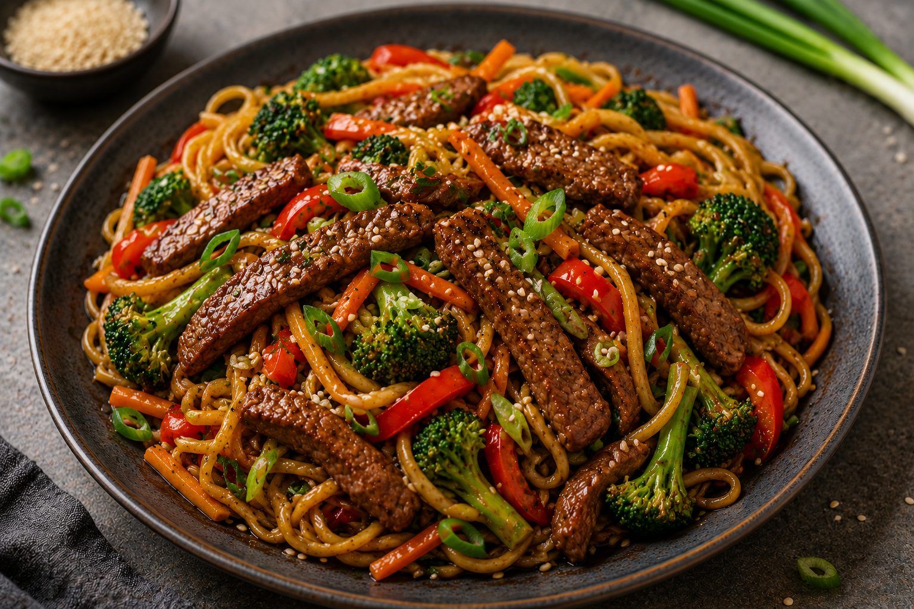

Biffwok med nudlar

En snabb och smakrik wok med strimlad biff, nudlar och krispiga grönsaker i en asiatisk sås med soja, vitlök och ingefära.
Förberedelse: 10 minuter | Tillagning: 15 minuter | Total tid: 25 minuter | Svårighetsgrad: Enkel | 4 portioner
Näringsvärde per portion: 570 kcal | Protein: 39 g
Ingredienser
- 500 g lövbiff
- 300 g äggnudlar
- 1 st röd paprika
- 1 st morot
- 150 g broccoli
- 2 st vitlöksklyftor
- 1 msk färsk riven ingefära
- 3 msk japansk soja
- 1 msk sesamolja
- 1 msk neutral olja
- 1 tsk honung
- Salt och svartpeppar efter smak
Till servering
- Rostade sesamfrön
- Skivad salladslök
Instruktioner
- Koka nudlarna enligt anvisningen på förpackningen. Häll av vattnet och ställ åt sidan.
- Skär lövbiffen i tunna strimlor. Skär paprika, morot och broccoli i mindre bitar.
- Blanda soja, sesamolja och honung i en liten skål.
- Hetta upp den neutrala oljan i en stor stekpanna eller wok på hög värme.
- Stek biffen snabbt i omgångar så att den får fin stekyta. Ta upp och lägg åt sidan.
- Stek broccoli, paprika och morot i samma panna i några minuter tills grönsakerna börjar mjukna men fortfarande har lite krisp.
- Finhacka vitlöken och tillsätt den tillsammans med den rivna ingefäran. Fräs i cirka 1 minut.
- Tillsätt nudlarna och biffen i pannan och häll över såsen. Blanda och stek ytterligare 2–3 minuter.
- Smaka av med salt och svartpeppar och blanda ordentligt.
- Servera direkt och toppa med rostade sesamfrön och skivad salladslök.